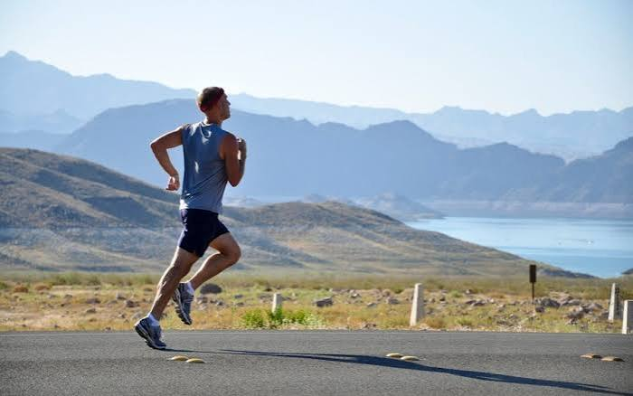

Hobbies
Hobbies are activities that we can enjoy in our free time. I have tried many hobbies before, and some of them have become my favorite ones.
Here are my most favorite hobbies:
- Playing Football
- Playing Video Games
- Jogging
- Editing Videos
Playing Football
Football is one of the most popular sports in the world. I really enjoy playing football, and this sport is my favorite. I usually play with other people, and my idol in football is Cristiano Ronaldo.
Playing Video Games
This is one of my second favorite hobbies. I love playing video games, especially online mobile games. I usually play with my friends, and it helps me reduce stress while having fun.

Jogging
Jogging is one of my favorite hobbies. I do it about four times a week, usually in the morning. It is very good for my health and helps keep my body fit and stronger.

Editing Videos
Editing videos is another favorite hobby of mine. I do it whenever I have free time, often using CapCut. I enjoy it because I can express my creativity and make my own videos.